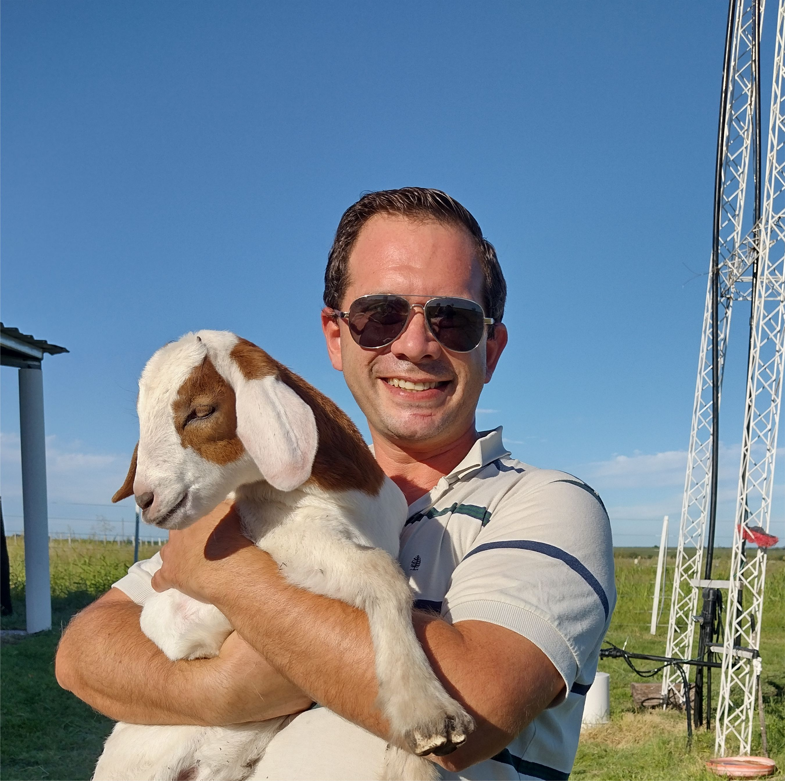

Es un placer conocerte, soy Sebastian Macharette
Full Stack Developer y Diseño Grafico

"¡Hola! Soy Sebastián Joaquín Macharette, un apasionado de la programación y el diseño gráfico. Nací el 31/07/1984 y vivo en Pujato, donde también me dedico a la agricultura familiar. Gracias a esta actividad, tengo una amplia disponibilidad horaria para dedicarme a la programación y desarrollar proyectos. Mi formación se extiende a áreas como el backend, frontend y diseño gráfico, adquiriendo conocimientos y habilidades en estas disciplinas. A lo largo de los años, he desarrollado amplios conocimientos en sistemas operativos como Windows y Linux, así como en el manejo de herramientas de ofimática. Además, cuento con habilidades blandas como la responsabilidad, la adaptabilidad y el trabajo en equipo. Mi pasión por la programación nació a una edad temprana, cuando tuve mi primera computadora con Windows 3.1 a los 11 años. Desde entonces, he seguido aprendiendo y explorando nuevas tecnologías y lenguajes de programación. Además de mi dedicación a la agricultura y la programación, también he tenido la oportunidad de participar activamente en la comunidad. Fui secretario del Club Náutico Casilda y he formado parte de las listas para las comisiones comunales de Pujato, siempre buscando aprender y aceptar nuevos desafíos. Amo la naturaleza y los animales, y encuentro inspiración en ellos. Esta pasión y mi trabajo en la agricultura familiar me brindan la flexibilidad y disponibilidad horaria necesaria para dedicarme plenamente a la programación y desarrollar proyectos creativos. Estoy emocionado de seguir creciendo en mi carrera profesional, explorando nuevas tecnologías y colaborando en proyectos interesantes. ¡Espero poder aportar mis habilidades y conocimientos en futuras oportunidades!"
"Durante mi formación académica, adquirí conocimientos y habilidades en programación y diseño gráfico que me han preparado para asumir desafíos en proyectos innovadores. En Egg Corporation, me especialicé en Lógica de Programación, Java, MySQL y Git. Esta experiencia me brindó una base sólida en el desarrollo de aplicaciones y el manejo de bases de datos. Posteriormente, participé en el programa Codo a Codo, donde tuve la oportunidad de ampliar mis habilidades en diversos lenguajes y tecnologías. Adquirí experiencia en Python, HTML, CSS, Bootstrap, JavaScript, Vue.js y SCRUM. Estos conocimientos me permiten abordar proyectos web de manera integral, desde el desarrollo del frontend hasta la gestión eficiente del proceso de desarrollo ágil. Además de mi enfoque en la programación, también me apasiona el diseño gráfico. Durante mi formación, adquirí experiencia en herramientas como Photoshop, Corel Draw e Illustrator. Estas habilidades me permiten crear interfaces atractivas y funcionales, así como dar vida a conceptos creativos a través del diseño visual. Como complemento a mi formación académica, he invertido tiempo en realizar cursos en Google sobre desarrollo web y marketing digital. Estos cursos me han permitido mantenerme actualizado en las últimas tendencias y prácticas de la industria. En resumen, mi formación profesional abarca un amplio espectro de tecnologías y herramientas, lo que me capacita para abordar proyectos desafiantes en el campo del desarrollo web. Estoy emocionado por la oportunidad de aplicar mis conocimientos y habilidades en proyectos innovadores y contribuir al crecimiento de futuras empresas o equipos."

Soy un apasionado desarrollador frontend con amplios conocimientos en HTML, CSS, JavaScript, Bootstrap y Vue.js. Mi enfoque principal radica en crear interfaces de usuario atractivas, intuitivas y altamente funcionales. Con habilidades sólidas en diseño web responsivo y técnicas de desarrollo modernas, tengo la capacidad de transformar conceptos y diseños en experiencias digitales excepcionales. Mi pasión por la estética y la usabilidad me impulsa a crear interfaces visualmente impresionantes que cautivan a los usuarios y mejoran su experiencia. Estoy constantemente actualizado sobre las últimas tendencias y mejores prácticas en el desarrollo frontend, y me enorgullece ofrecer soluciones creativas y eficientes. Con mi enfoque colaborativo y capacidad para trabajar en equipo, estoy listo para aportar mis habilidades y conocimientos en el desarrollo frontend a proyectos desafiantes y emocionantes.
Soy un desarrollador backend altamente competente con sólidos conocimientos en Java, Python, Git/GitHub, Scrum, MySQL, CRUD y Django. Mi pasión por la creación de soluciones robustas y escalables me impulsa a diseñar y desarrollar sistemas eficientes que impulsan el funcionamiento fluido de las aplicaciones. Con habilidades en el manejo de bases de datos y la implementación de operaciones CRUD, estoy preparado para optimizar el rendimiento y la seguridad de los sistemas. Mi experiencia en el uso de frameworks como Django me permite crear aplicaciones web poderosas y flexibles. Además, mi conocimiento en metodologías ágiles como Scrum me permite colaborar eficazmente en equipos de desarrollo. Soy un solucionador de problemas apasionado con una mentalidad orientada a resultados y una fuerte capacidad para enfrentar desafíos técnicos. Estoy listo para enfrentar nuevos proyectos y contribuir al éxito de su equipo.
Soy un diseñador gráfico altamente creativo y talentoso con amplia experiencia en Corel Draw, Adobe Photoshop, Adobe Illustrator, Paint Shop Pro y Affinity. Mi pasión por el diseño me impulsa a crear visualmente impresionantes y atractivas piezas gráficas que transmiten mensajes efectivos y cautivan al público objetivo. Con habilidades sólidas en la manipulación de imágenes, la creación de ilustraciones y el diseño de logotipos, tengo la capacidad de transformar ideas abstractas en diseños impactantes. Mi profundo conocimiento de las herramientas y técnicas de diseño más populares me permite trabajar con eficacia y eficiencia, entregando resultados de alta calidad dentro de los plazos establecidos. Mi enfoque centrado en el cliente y mi atención meticulosa al detalle garantizan que cada proyecto cumpla con los estándares más exigentes. Estoy listo para aportar mi experiencia y habilidades en diseño gráfico a proyectos desafiantes y emocionantes, brindando soluciones creativas y visualmente atractivas.